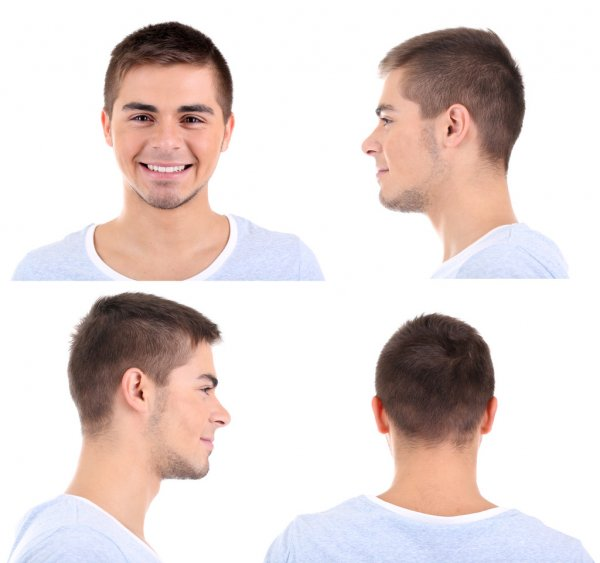

En este apartado se exponen los limitantes que afectan negativamente la aplicación
Punto de vista

La visión artificial es muy dependiente de la perspectiva de la imagen que se le presenta. Para efectos del proyecto puede que en ciertas ocasiones no detecte rostros
debido a que la percepción de rostros en las imagenes se ve limitada al frente de la cara y no a las distintas direcciones desde donde se puede percibir un rostro
Resolución de la imagen
El tamaño de la imagen ingresada en la aplicación puede afectar el reconocimiento debido a mayor calidad de resolución, mejor es el reconocimiento. En imagenes de baja resolución puede ocurrir
que no consiga identificar rostros aunque los hubiera por la nula diferenciación entre pixeles y otros factores manejados por el modelo de computer visión.

Filtros en imagen

La deformación de las imagenes puede causar la difuminación de pixeles y alterar el resultado del reconocimiento debido a que el modelo de vision artificial podría malinterpretar los pixeles y sacar conclusiones
incorrectas o no encontrar del todo rostros
Fondo desordenado
La cantidad de tonalidades presentes en fondos desordenados causa que el modelo no pueda encontrar patrones de distincion de rostros, lo cual se refleja en el resultado final no encontrando del todo resultados